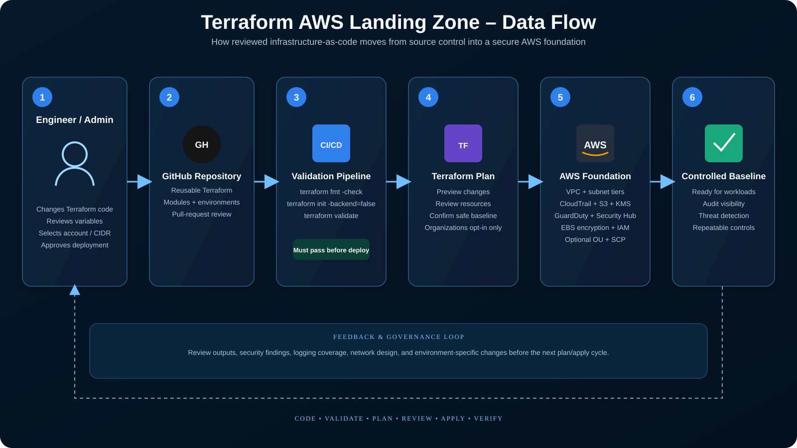
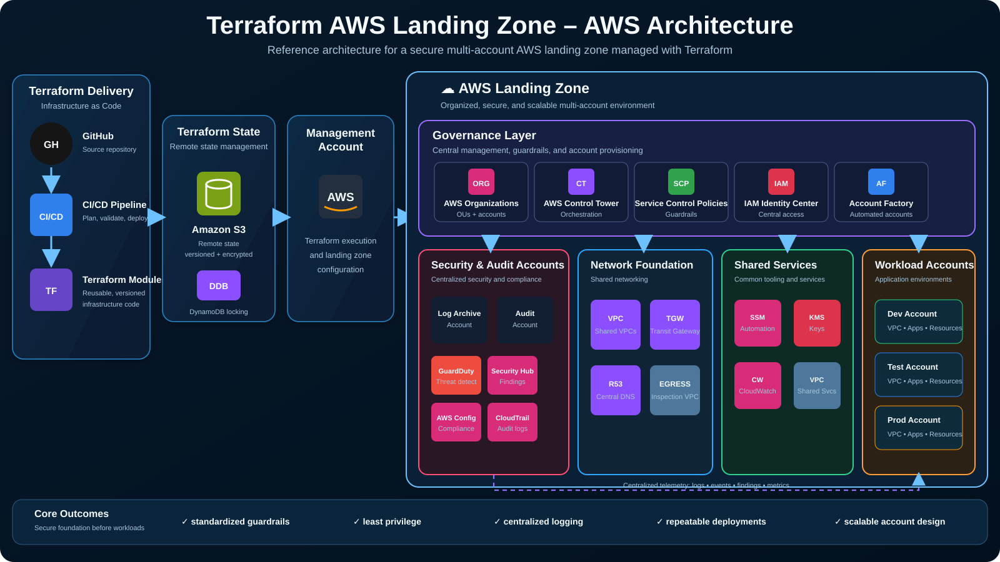

INFRASTRUCTURE AS CODE · LANDING ZONE
Terraform AWS Landing Zone
Reusable AWS foundation for governance, secure networking, centralized audit logging, encryption, threat detection, and workload guardrails — implemented as reviewable Terraform code.
TerraformAWS OrganizationsSCPsVPCCloudTrailKMSGuardDutySecurity HubS3IAM
PROJECT STATUSImplemented
TERRAFORMReusable IaC
DEFAULT MODESafe Account Baseline
ORG CHANGESOpt-in Only
ARCHITECTURE FLOW
Secure foundation before workloads
GOVERNAWS Organizations
Optional workload OU and approved-Regions SCP guardrail.
SEGMENTVPC Foundation
Multi-AZ public/private subnet tiers and controlled routing.
AUDITCloudTrail + S3
Multi-region logging into private, versioned audit storage.
PROTECTKMS + Security
KMS encryption, GuardDuty, Security Hub, and EBS encryption.
HOSTWorkload Foundation
Controlled AWS environment ready for application deployments.


Implemented controls
Multi-region CloudTrail with log-file validation and encrypted S3 retention.
Dedicated KMS keys for audit logs and default EBS workload encryption.
GuardDuty and Security Hub baseline security services.
Public/private subnet separation with an S3 Gateway VPC endpoint.
Optional AWS Organizations OU and region-restriction SCP.
GitHub Actions Terraform format and validation checks.
Project modules
NetworkVPC, subnets, routes, endpoint
AuditS3, KMS, CloudTrail
SecurityGuardDuty, Security Hub, EBS
GovernanceOrganizations, OU, SCP
Identity BaselinePassword policy / federation-ready
AutomationTerraform CI validation
AWS Organizations resources are intentionally disabled by default. Production deployment requires environment-specific account, CIDR, governance, and state-management decisions.